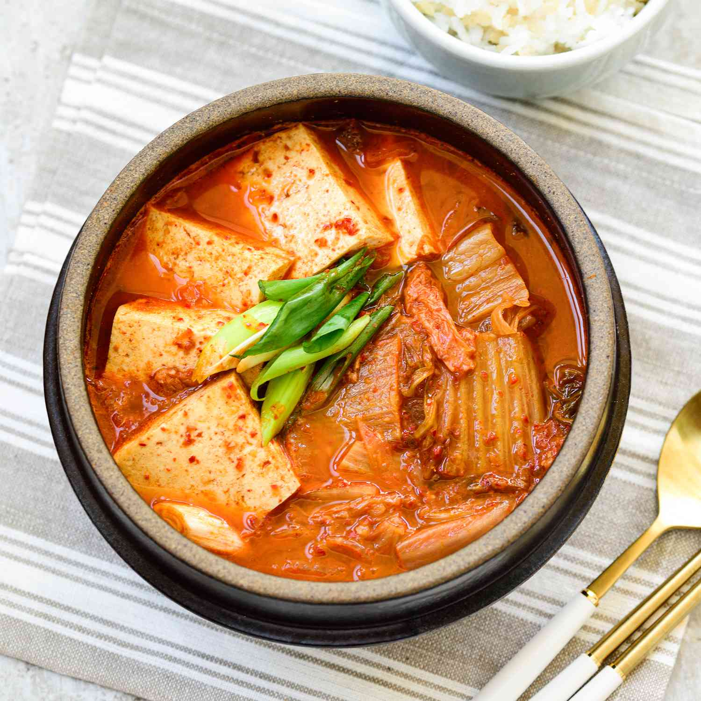

Home
Kimchi-Jjigae Recipe

Description
The classic Kimchi Jjigae (Kimchi stew) recipe with some fatty pork. When the fat from the pork melts into the soup, it becomes irresistibly delicious!
Ingredients
Meat
- 180g (0.4 pounds) skinless pork belly, cut into bite size pieces
- 1 Tbsp rice wine, sweet (mirin)
- 3 sprinkles ground black pepper
Kimchi and others
- 3/4 cup aged (at least 2 to 3 weeks old) kimchi, cut into bite size pieces if not already
- 1/4 small (30g, 1 ounce) brown onion, thinly sliced
- 1/2 stalk small (5g, 0.2 ounce) green onion, thinly sliced
- 2 small (50g, 1.4 ounces) shiitake mushrooms, stems removed, thinly sliced
- 150g (5.3 ounces) firm tofu, sliced into 1cm (0.4 inch) thickness rectangle (or other shapes you may prefer)
- 1 cup water
Jjigae Base
- 1 Tbsp Korean chili flakes (gochugaru)
- 1 Tbsp soy sauce/li>
- 1 tsp Korean chili paste (gochujang)
- 1/4 tsp minced garlic
- sprinkles ground black pepper
Steps
- Marinate the pork belly with the rice wine and the ground black pepper for about 15 mins.
- Cook the kimchi in a skillet until soft. (Alternatively, you can do this directly in the pot where you’ll make the jjigae, but only if the pot is large enough to maneuver easily.)
- Place the marinated meat at the bottom of the pot. Add all the other ingredients—kimchi, onion, mushrooms, tofu, water, and the base sauce—into the pot, except for the green onion. (I used a clay pot with a capacity of just over 1 liter. I’ve also successfully made this using an 18cm (7-inch) Staub Cocotte without needing the skillet mentioned in the previous step.)
- Bring the pot to a boil over medium-high heat. Once boiling, lower the heat to medium and continue cooking until the meat is completely cooked through, which should take about 10 to 15 minutes from the start of this step. To ensure the sauce is evenly incorporated, gently stir it into the soup using a spoon. Occasionally, spoon some of the broth over the other ingredients to help distribute the flavors. When the meat is done, add the green onion, give it a final gentle mix, and turn off the heat.
- Serve with a bowl of rice and other Korean side dishes.